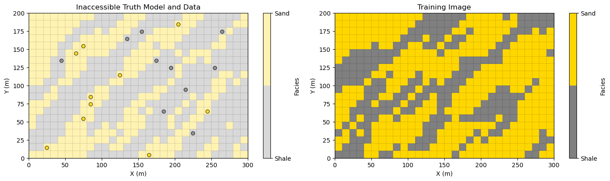
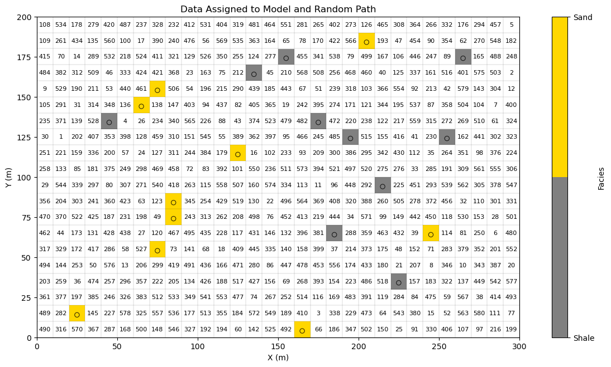
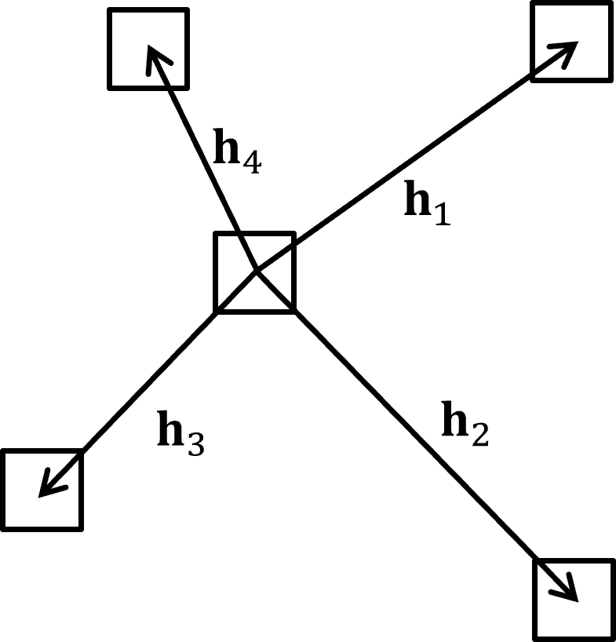
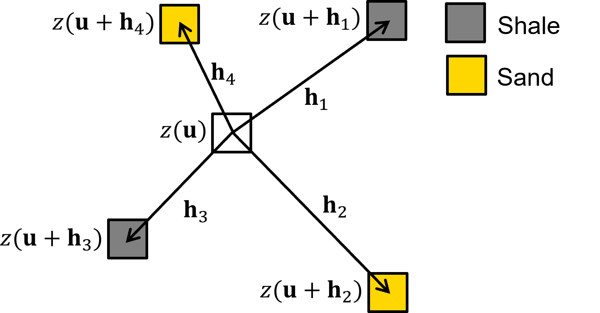
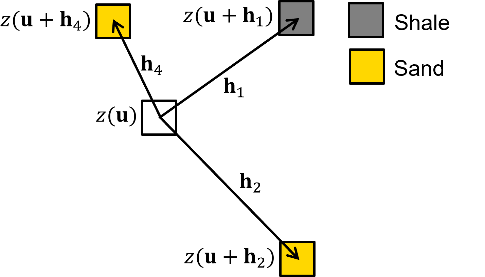
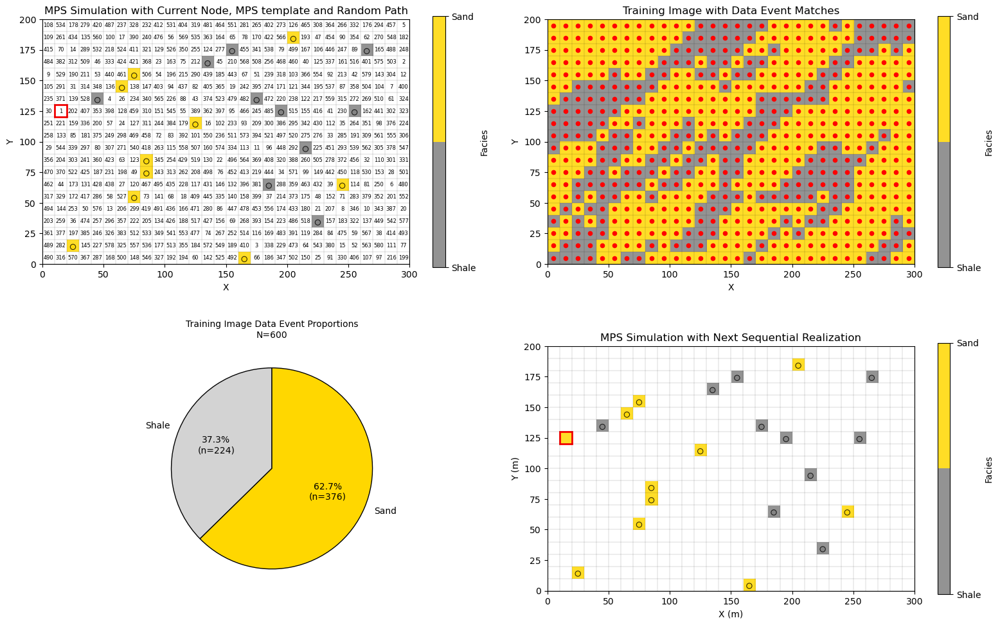
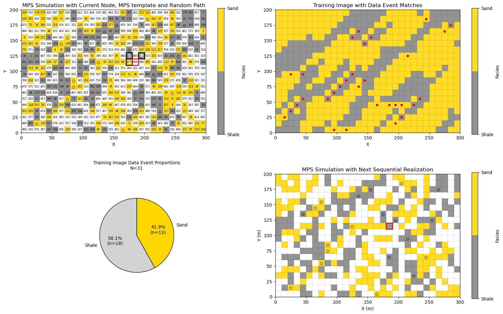
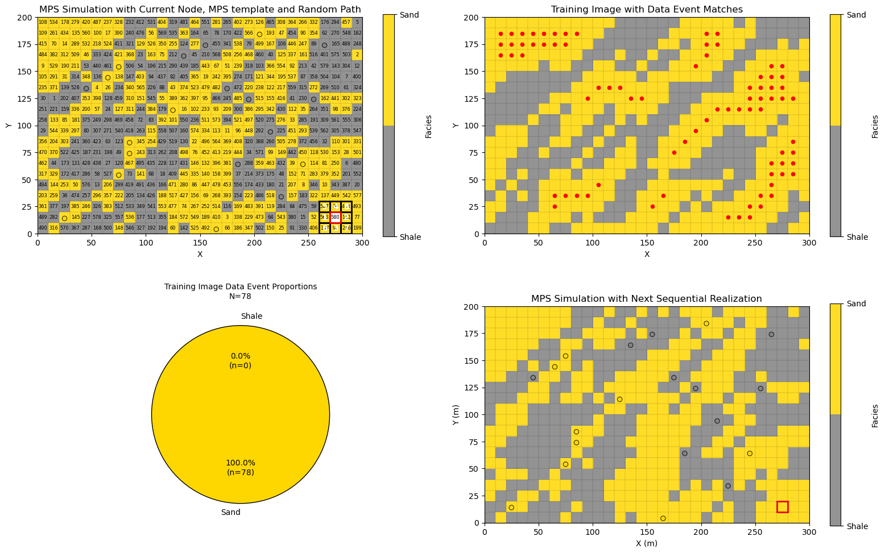
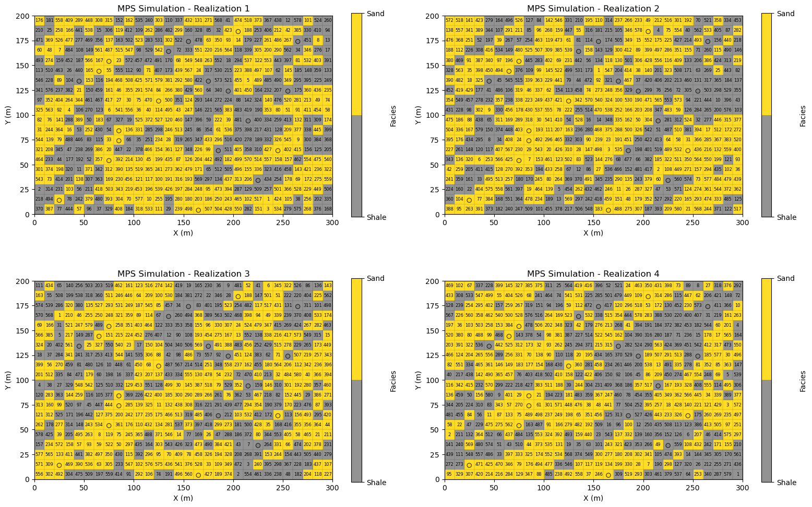

Multiple Point Simulation#
Michael J. Pyrcz, Professor, The University of Texas at Austin
Twitter | GitHub | Website | GoogleScholar | Book | YouTube | Applied Geostats in Python e-book | LinkedIn
Chapter of e-book “Applied Geostatistics in Python: a Hands-on Guide with GeostatsPy”.
Cite this e-Book as:
Pyrcz, M.J., 2024, Applied Geostatistics in Python: a Hands-on Guide with GeostatsPy [e-book]. Zenodo. doi:10.5281/zenodo.15169133 
The workflows in this book and more are available here:
Cite the GeostatsPyDemos GitHub Repository as:
Pyrcz, M.J., 2024, GeostatsPyDemos: GeostatsPy Python Package for Spatial Data Analytics and Geostatistics Demonstration Workflows Repository (0.0.1) [Software]. Zenodo. doi:10.5281/zenodo.12667036. GitHub Repository: GeostatsGuy/GeostatsPyDemos 
By Michael J. Pyrcz
© Copyright 2024.
This chapter is a tutorial for / demonstration of Multiple Point Simulation for simulating spatial categorical features, e.g., like facies.
specifically we use multiple point simulation to simulate categorical features and to produce models with heterogeneities more complicated than variogram-based methods.
YouTube Lecture: check out my lectures on:
TBD
For your convenience here’s a summary of salient points.
Load the Required libraries#
The following code loads the required libraries.
import geostatspy.GSLIB as GSLIB # GSLIB utilities, visualization and wrapper
import geostatspy.geostats as geostats # GSLIB methods convert to Python
import geostatspy
print('GeostatsPy version: ' + str(geostatspy.__version__))
GeostatsPy version: 0.0.71
We will also need some standard packages. These should have been installed with Anaconda 3.
import os # set working directory, run executables
from tqdm import tqdm # suppress the status bar
from functools import partialmethod
tqdm.__init__ = partialmethod(tqdm.__init__, disable=True)
ignore_warnings = True # ignore warnings?
import numpy as np # ndarrays for gridded data
import pandas as pd # DataFrames for tabular data
import matplotlib.pyplot as plt # for plotting
import matplotlib.patches as patches
import matplotlib as mpl # custom colorbar
import matplotlib.patches as mpatches # categorical legend
from matplotlib.colors import LinearSegmentedColormap
from matplotlib.ticker import (MultipleLocator, AutoMinorLocator) # control of axes ticks
plt.rc('axes', axisbelow=True) # plot all grids below the plot elements
if ignore_warnings == True:
import warnings
warnings.filterwarnings('ignore')
cmap = plt.cm.inferno # color map
seed = 42
If you get a package import error, you may have to first install some of these packages. This can usually be accomplished by opening up a command window on Windows and then typing ‘python -m pip install [package-name]’. More assistance is available with the respective package docs.
Define Functions#
These are the fundamental functions required to calculate a multiple point simulation (MPS) realization, including,
plot_mps_template - return the data even given the current node location and the data and previously simulated nodes, with the option to plot the current simulation model with the data event highlighted in the grid
find_template_matches_TI - scan the training image and find data event matches, return the matches and frequencies of each facies at the matches with the option to plot the matches (red dots) over the training image
template_match_probs_drop - vectorized code for scanning the training image for data event matches, without visualization as a speed up for simulating all previous nodes before the current visualized node
Along with convenience functions,
remove_unsimulated_cells_fixed - add data to simulation model, and include any number of truth values to mimic a partially completed simulation if computational time is too long for a complete simulated realization
plot_simulated - plot the simulation model with the new simulated realization added
plot_mps_pie - plot the conditional PDF for facies given the data event and training image as a pie plot
def remove_unsimulated_cells_fixed(mini_model, df,nx, ny,xmin, xmax, ymin, ymax,n_unsim,seed=42):
rng = np.random.default_rng(seed); dx = (xmax - xmin) / nx; dy = (ymax - ymin) / ny # convert coordinates → grid indices
ix = ((df["X"].to_numpy() - xmin) / dx).astype(int); iy = ((df["Y"].to_numpy() - ymin) / dy).astype(int)
ix = np.clip(ix, 0, nx - 1); iy = np.clip(iy, 0, ny - 1)
iy_np = (ny - 1) - iy # flip y-axis for numpy indexing
occupied = np.zeros((ny, nx), dtype=bool) # check for occupied grid node (with data)
occupied[iy_np, ix] = True
empty_cells = np.argwhere(~occupied)
if len(empty_cells) == 0:
raise ValueError("No empty cells available.")
perm = rng.permutation(len(empty_cells)) # fix random path ordering
if n_unsim > len(empty_cells):
raise ValueError("n_unsim exceeds number of empty cells")
remove_cells = empty_cells[perm[:n_unsim]] # apply removal
out = mini_model.copy()
for j, i in remove_cells:
out[j, i] = np.nan
return out, remove_cells, empty_cells[perm]
def plot_mps_template(grid,template,ix, iy,xmin, xmax, ymin, ymax,title, plot_template, cmap, ax): # visualize template, return effective template
ny, nx = grid.shape # define grid
dx = (xmax - xmin) / nx; dy = (ymax - ymin) / ny
if plot_template:
im = ax.imshow(grid,extent=[xmin, xmax, ymin, ymax],cmap=cmap,alpha=0.85) # plot grid
effective_template = [] # build effective template (drop NaNs in grid)
for k, (dix, diy) in enumerate(template):
j = iy + diy; i = ix + dix
if i < 0 or i >= nx or j < 0 or j >= ny: # skip out-of-bounds
continue
if np.isnan(grid[j, i]): # skip unsimulated (NaN) nodes in grid
continue
effective_template.append((dix, diy)) # draw only valid nodes
x0 = xmin + i * dx; y0 = ymin + ((ny - j) - 1) * dy
if plot_template:
rect = patches.Rectangle((x0, y0),dx, dy,linewidth=2,edgecolor="black",facecolor="none")
ax.add_patch(rect)
if k > 0:
ax.text(x0 + dx / 2,y0 + dy / 2,str(k),ha="center",va="center",fontsize=10,color="white",
fontweight="bold",zorder=100)
if plot_template:
cx = xmin + ix * dx; cy = ymin + ((ny - iy) - 1) * dy # center node
rect = patches.Rectangle((cx, cy),dx, dy,linewidth=2,edgecolor="red",facecolor="none")
ax.add_patch(rect)
ax.set_title(title); ax.set_xlabel("X"); ax.set_ylabel("Y")
cbar = plt.colorbar(im, ticks=[0, 1]); cbar.ax.set_yticklabels(["Shale", "Sand"]); cbar.set_label("Facies")
return effective_template
def find_template_matches_TI(sim,TI,template,ix,iy,plot,title,cmap,ax): # find TI locations matching SIM-based conditioning pattern.
ny, nx = TI.shape
ref_pattern = [] # extract conditioning pattern from SIM
for dix, diy in template:
i_sim = ix + dix
j_sim = iy + diy
if i_sim < 0 or i_sim >= nx or j_sim < 0 or j_sim >= ny:
return None, None
ref_pattern.append(sim[j_sim, i_sim])
ref_pattern = np.array(ref_pattern)
matches = [] # scan for data event matches in TI
for j in range(ny):
for i in range(nx):
ok = True
for k, (dix, diy) in enumerate(template):
if dix == 0 and diy == 0:
continue
jj = j + diy
ii = i + dix
if ii < 0 or ii >= nx or jj < 0 or jj >= ny:
ok = False
break
if TI[jj, ii] != ref_pattern[k]:
ok = False
break
if ok:
matches.append((j, i))
matches = np.array(matches)
if len(matches) > 0: # compute proportions
values = TI[matches[:, 0], matches[:, 1]]
p0 = np.mean(values == 0); p1 = np.mean(values == 1)
else:
p0, p1 = np.nan, np.nan
if plot: # plot
im = ax.imshow(TI, cmap=cmap,extent=[xmin, xmax, ymin, ymax],alpha=0.85)
x0_matches = xmin + matches[:,1] * cell_size + cell_size*0.5
y0_matches = ymin + ((ny - matches[:,0]) - 1) * cell_size + cell_size*0.5
if len(matches) > 0:
ax.scatter(x0_matches, y0_matches,c="red", s=20, label="matches")
ax.set_title(title); ax.set_xlabel("X"); ax.set_ylabel("Y")
cbar = plt.colorbar(im, ticks=[0, 1]); cbar.ax.set_yticklabels(["Shale", "Sand"])
cbar.set_label("Facies")
return matches, {"facies_0": p0, "facies_1": p1}
def template_match_probs_drop(sim, TI, template, ix, iy):
ny, nx = TI.shape
template = list(template)
if len(template) == 0: # no conditioning data → global TI prior
vals = TI.ravel()
return np.mean(vals == 0), np.mean(vals == 1), vals.size, []
def compute_probs(current_template):
ref = [] # build data event from SIM (conditioning)
for dix, diy in current_template:
ii = ix + dix
jj = iy + diy
if ii < 0 or ii >= nx or jj < 0 or jj >= ny:
return np.nan, np.nan, 0
ref.append(sim[jj, ii])
ref = np.array(ref)
mask = np.ones((ny, nx), dtype=bool) # scan TI for matching patterns
for k, (dix, diy) in enumerate(current_template):
j0_src = max(0, -diy)
j1_src = min(ny, ny - diy)
i0_src = max(0, -dix)
i1_src = min(nx, nx - dix)
j0_dst = j0_src + diy
j1_dst = j1_src + diy
i0_dst = i0_src + dix
i1_dst = i1_src + dix
comp = np.zeros((ny, nx), dtype=bool)
comp[j0_src:j1_src, i0_src:i1_src] = (TI[j0_dst:j1_dst, i0_dst:i1_dst] == ref[k])
mask &= comp
if not mask.any():
return np.nan, np.nan, 0
vals = TI[mask]
if vals.size == 0:
return np.nan, np.nan, 0
return np.mean(vals == 0), np.mean(vals == 1), vals.size
current_template = template.copy() # progressive template reduction
while len(current_template) > 0:
p0, p1, nmatch = compute_probs(current_template)
if nmatch > 0:
return p0, p1, nmatch, current_template
current_template = current_template[:-1]
vals = TI.ravel() # fallback: global TI statistics
return np.mean(vals == 0), np.mean(vals == 1), vals.size, []
def plot_mps_pie(n_matches, proportions, ax,labels=("shale", "sand"),colors=("lightgrey", "gold"),
title="TI Match Proportions"):
if n_matches == 0 or np.isnan(proportions["facies_0"]): # handle empty case
ax.text(0.5, 0.5, "No Matches",
ha="center", va="center",
fontsize=12)
ax.set_axis_off()
return
p0 = proportions["facies_0"]; p1 = proportions["facies_1"] # calculate probabilities
sizes = [p0, p1]
counts = [int(round(p0 * n_matches)),int(round(p1 * n_matches))] # convert to counts
def make_autopct(counts): # autopct formatter (percent + count)
def autopct(pct):
idx = autopct.idx
text = f"{pct:.1f}%\n(n={counts[idx]})"
autopct.idx += 1
return text
autopct.idx = 0
return autopct
radius = 0.3 + 0.7 * min(n_matches / 50.0, 1.0) # scale pie size by support
ax.pie(sizes,labels=labels,colors=colors,startangle=90,autopct=make_autopct(counts), # plot
radius=radius,wedgeprops={"edgecolor": "black"})
ax.set_title(f"{title}\nN={n_matches}", fontsize=10)
def plot_simulated(grid,ix,iy,proportions,xmin,xmax,ymin,ymax,title,cmap,ax):
ny, nx = grid.shape
dx = (xmax - xmin) / nx
dy = (ymax - ymin) / ny
p1 = proportions["facies_1"]
realization = int(np.random.random() < p1)
new_grid = np.copy(grid)
new_grid[iy,ix] = realization
im = ax.imshow(new_grid,extent=[xmin, xmax, ymin, ymax],cmap=cmap,alpha=0.85) # plot updated realization
x0 = xmin + ix * dx; y0 = ymin + ((ny - iy) - 1) * dy
rect = patches.Rectangle((x0, y0),dx, dy,linewidth=2,edgecolor="red",facecolor="none") # outline new realization
ax.add_patch(rect)
ax.set_title(title); ax.set_xlabel("X (m)"); ax.set_ylabel("Y (m)")
cbar = plt.colorbar(im, ticks=[0, 1]); cbar.ax.set_yticklabels(["Shale", "Sand"])
cbar.set_label("Facies")
def just_plot_simulated(grid,xmin,xmax,ymin,ymax,title,cmap,ax):
im = ax.imshow(grid,extent=[xmin, xmax, ymin, ymax],cmap=cmap,alpha=0.85) # plot updated realization
ax.set_title(title); ax.set_xlabel("X (m)"); ax.set_ylabel("Y (m)")
cbar = plt.colorbar(im, ticks=[0, 1]); cbar.ax.set_yticklabels(["Shale", "Sand"])
cbar.set_label("Facies")
def copy_truth_values(cur_sim,truth,unsim,iunsim): # copy truth values as "previously simulated nodes", mimic partially simulated
n = min(iunsim, len(unsim)) # safety check
for k in range(n-1):
iy, ix = unsim[k]
cur_sim[iy, ix] = truth[iy, ix]
return cur_sim
def copy_truth_values(cur_sim,truth,unsim,iunsim): # copy truth values as "previously simulated nodes", mimic partially simulated
n = min(iunsim, len(unsim)) # safety check
for k in range(n-1):
iy, ix = unsim[k]
cur_sim[iy, ix] = truth[iy, ix]
return cur_sim
def sample_facies(matches_dict): # draws a random 0 or 1 based on the facies probabilities in the dictionary.
outcomes = [0, 1] # define the output choices corresponding to facies_0 and facies_1
probabilities = [matches_dict['facies_0'], matches_dict['facies_1']] # extract probabilities from the specific keys
return np.random.choice(outcomes, p=probabilities) # return a single random selection
def sample_facies_fast(p0,p1): # draws a random 0 or 1 based on the facies probabilities in the dictionary.
outcomes = [0, 1] # define the output choices corresponding to facies_0 and facies_1
probabilities = [p0,p1] # extract probabilities from the specific keys
return np.random.choice(outcomes, p=probabilities) # return a single random selection
Make Custom Colorbar#
We make this colorbar to display our categorical, sand and shale facies.
cmap_facies = mpl.colors.ListedColormap(['grey','gold']) # sand and shale binary color map
cmap_facies.set_over('white'); cmap_facies.set_under('white')
cmap_facies_cont = LinearSegmentedColormap.from_list("cmap_facies_cont",["grey", "gold"],) # continuous color map variant
Set the Working Directory#
I always like to do this so I don’t lose files and to simplify subsequent read and writes (avoid including the full address each time).
#os.chdir("c:/PGE383") # set the working directory
Loading Data and Training Image#
Since I have not developed an efficient MPS simulation routine, I’m using the brute force method based on a complete scan of the training image for every local simulation, we work with a,
small model, \(n_x = 30\), \(n_y = 20\)
training image, \(n_x = 30\), \(n_y = 20\)
data set, \(n_{data} = 20\)
Here’s the,
truth model (truth) - an exhaustive model that we extracted the data from that has similar spatial continuity as the training image (they are both extracted from different locations of the same larger model). I used this exhaustive truth model to ensure data and training image consistency (avoiding spatial contradictions). If your computer is slow, you can set, \(n_unsim\) below to a number less than 580 (\(n_x \times n_y - n_{data}\)) and truth model values will be assigned as previously simulated nodes along the random path.
training image (TI) - once again, extracted from the same larger model as the truth model, it has consistent patterns with the simulation (from truth model) and the data (also from the truth model). Remember the training image has no data conditioning nor local information, i.e., it is an exhaustive model with the correct spatial correlation structures.
data set (df) - extracted from the truth model, and below it is initialized to the simulation model (as is the first step with geostatistical sequential simulation).
Warning, for this demonstration we are assuming the simulation grid, truth grid and training image grid are all the same (same \(n_x\) and \(n_y\) and extents).
in practice the training image and simuulate grid must have the same cell sizes, but may have different number of cells (\(n_x\) and \(n_y\))
df = pd.read_csv("https://raw.githubusercontent.com/GeostatsGuy/GeoDataSets/master/2D_facies_minimodel_wells.csv") # load all from Dr. Pyrcz's GitHub
truth = np.loadtxt(fname="https://raw.githubusercontent.com/GeostatsGuy/GeoDataSets/master/2D_facies_minimodel_array.csv", delimiter=",")
TI = np.loadtxt(fname="https://raw.githubusercontent.com/GeostatsGuy/GeoDataSets/master/2D_facies_minimodel_array_v2.csv", delimiter=",")
import geostatspy.GSLIB as GSLIB # GSLIB utilities, visualization and wrapper
ny, nx = truth.shape # get the mini-model grid parameters
cell_size = 10.0; xmin = 0.0; ymin = 0.0
xmax = xmin + nx*cell_size; ymax = ymin + ny*cell_size;
plt.subplot(121) # visualize the truth model with data, and the training image
cs = plt.imshow(truth,interpolation = None,extent = [xmin,xmax,ymin,ymax], vmin = 0.0, vmax = 1.0,alpha = 0.3,cmap = cmap_facies)
x_edges = np.linspace(xmin, xmax, nx+1); y_edges = np.linspace(ymin, ymax, ny+1)
plt.vlines(x_edges, ymin, ymax, colors="k", linewidth=0.2, alpha=0.5) # horizontal andd vertical grid lines
plt.hlines(y_edges, xmin, xmax, colors="k", linewidth=0.2, alpha=0.5)
plt.scatter(df['X'],df['Y'],s=None,c=df['Facies'],marker=None,cmap=cmap_facies,vmin=0.0,vmax=1.0,
alpha=0.8,linewidths=0.8,edgecolors="black",)
cbar = plt.colorbar(cs, ticks=[0, 1])
cbar.ax.set_yticklabels(["Shale", "Sand"])
cbar.set_label("Facies")
plt.title('Inaccessible Truth Model and Data'); plt.xlabel('X (m)'); plt.ylabel('Y (m)'); plt.tight_layout()
plt.subplot(122)
cs = plt.imshow(TI,interpolation = None,extent = [xmin,xmax,ymin,ymax], vmin = 0.0, vmax = 1.0,cmap = cmap_facies)
plt.vlines(x_edges, ymin, ymax, colors="k", linewidth=0.2, alpha=0.5) # horizontal andd vertical grid lines
plt.hlines(y_edges, xmin, xmax, colors="k", linewidth=0.2, alpha=0.5)
cbar = plt.colorbar(cs, ticks=[0, 1])
cbar.ax.set_yticklabels(["Shale", "Sand"])
cbar.set_label("Facies")
plt.title('Training Image'); plt.xlabel('X (m)'); plt.ylabel('Y (m)'); plt.tight_layout()
plt.subplots_adjust(left=0.0, bottom=0.0, right=2.2, top=0.7, wspace=0.00, hspace=0.1); plt.show()

Set Up the Circumstances for a Step in Multiple Point Simulation#
Now to illustrate multiple point simulation, let’s,
make a copy of the truth model
remove a random set of values from the truth model (not at data locations)
Now we have the circumstances in the middle of the calculation of a multiple point simulation,
data are assigned to nearest grid nodes and are immutable
previously simulated values are assigned to grid and treated as data
unsimulated values (future steps on the random path) are unsimulated (unassigned at this step)
n_unsim = 580 # number of unsimulated nodes in model (580 for only data in grid)
total_step = nx*ny - len(df)
step = total_step - n_unsim
sim, unsim, cells_empty = remove_unsimulated_cells_fixed(truth,df,nx,ny,xmin,xmax,ymin,ymax,n_unsim,seed=seed) # assign unsimulated
plt.subplot(111) # visualize current step in MPS sequential path
cs = plt.imshow(sim,interpolation = None,extent = [xmin,xmax,ymin,ymax], vmin = 0.0, vmax = 1.0,cmap = cmap_facies)
plt.vlines(x_edges, ymin, ymax, colors="k", linewidth=0.2, alpha=0.5) # horizontal andd vertical grid lines
plt.hlines(y_edges, xmin, xmax, colors="k", linewidth=0.2, alpha=0.5)
plt.scatter(df['X'],df['Y'],s=None,c=df['Facies'],marker=None,cmap=cmap_facies,vmin=0.0,vmax=1.0,
alpha=0.8,linewidths=0.8,edgecolors="black",)
cbar = plt.colorbar(cs, ticks=[0, 1]); cbar.ax.set_yticklabels(["Shale", "Sand"])
cbar.set_label("Facies")
for i, (iy, ix) in enumerate(unsim): # label random path in node centers
k = nx*ny - (n_unsim - i) - 1
x0 = xmin + ix * cell_size
y0 = ymin + ((ny - iy) - 1) * cell_size
plt.text(x0 + cell_size / 2,y0 + cell_size / 2,str(i+1),ha="center",va="center",fontsize=8,color="black",)
plt.title('Data Assigned to Model and Random Path'); plt.xlabel('X (m)'); plt.ylabel('Y (m)'); plt.tight_layout()
plt.subplots_adjust(left=0.0, bottom=0.0, right=1.8, top=1.2, wspace=0.2, hspace=0.2); plt.show()

Perform Multiple Point Simulation#
Multiple point simulation is applied to calculate stochastic categorical realizations conditional to available data. The caculation of a realization can be concisely expressed as a joint sampling of the random function,
where \(\bf{u}\) is a location vector, \(AOI\) is the set of all grid cells in the simulation model, and \(Z\) is the feature of interest.
This doesn’t look too difficult, so let’s expand it to gain an appreciation for the size of the problem.
This is a \(N\) dimensional probability density function where \(N\) is commonly greater than one million grid cells; therefore, this is typically a vast solution space and this sampling is not possible.
We use the recursive application of the multiplication rule, \(P(A,B) = P(A \mid B)\,P(B)\) i.e., chain rule of probability, to make this practical,
In words, the sequential simulation workflow proceeds by,
Monte Carlo simulate at the first grid cell location, \(\bf{u}_1\) from the marginal probability density function, \(P\big(Z(\mathbf{u}_1)\big)\)
Monte Carlo simulate at the second grid cell location, \(\bf{u}_2\) from the conditional probability density function, \(P\big(Z(\mathbf{u}_2)\mid Z(\mathbf{u}_1)\big)\)
Monte Carlo simulate at the third grid cell location, \(\bf{u}_3\) from the conditional probability density function, \(P\big(Z(\mathbf{u}_3)\mid Z(\mathbf{u}_2), Z(\mathbf{u}_1)\big)\)
Given this sequential simulation paradigm, now let’s walk through the steps in the case of multiple point simulation. Note, the multiple point template, training image and data events are applied to calculate these marginal and conditional probablities to support our Monte Carlo simulation of local realizations that we put together to calculate the realization over all grid cells. Here are the steps with implementation details,
Define the multiple point template - the template is represented by a 2D array \([ n_{points}, \Delta^{ix,iy} ]\). For example, 2 nodes is the unknown location, \(\Delta^{ix}_0 = 0\), \(\Delta^{iy}_0 = 0\), with one other location relative to the unknown location, e.g., \(\Delta^{ix}_1 = -1\), \(\Delta^{iy}_1 = 1\) is up one cell and left one cell.
\(\quad\) The multiple point template is defined as,
\(\quad\) where each \(\bf{h}_i\) is an offset in grid cells from the unknown location, \(\Delta^{ix}_i, \Delta^{iy}_i,\).

\(\quad\) For the example, below we have a 5 point multiple point template with the unknown location and all the adjacent cells on each face,
\(\quad\) For clarity, here is an illustration of this multiple point template,
Visit a location along the random path - sequentially visit grid cells (without assigned data) along the random path. The random (instead of ordered) path is prefered to avoid path artifacts such as smearing of values along the path that will appear as striations, e.g., like you would see in an cereal crop field from an airplane window, due to variations in seeding and other treatments along the path of the tractor.
\(\quad\) At grid cell \(k\), along the random path conditioning information includes,
hard data assigned to nearest grid cells, \(z(\bf{u_{\alpha}}), \quad \forall \quad \alpha = 1, \ldots, n_{data}(\bf{u}_k)\), where \(n_{data}(\bf{u}_k)\) is the number of data conditioning grid cell, \(\bf{u}_k\)
previously simulated grid cells, \(z(\bf{u_{\beta}}), \quad \forall \quad \beta = 1, \ldots, n_{sim}\), where \(n_{sim}(\bf{u}_k)\) is the number of previously simulated grid cells conditioning grid cell, \(\bf{u}_k\)
Extract the multiple point data event - at the current location along the random path apply the multiple point template, \(\tau\), and extract the multple point data event from the simulation model for template locations, \(\bf{u}_k+\bf{h}_1 \ldots \bf{u}_k + \bf{h}_m\).
note, the first point in the template, \(\mathbf{u}_k\), is dropped from the multiple point data event as it is unknown and we are going to calculate the conditional probability distribution for it given the data event.
\(\quad\) For a grid cell location along the random path, \(\mathbf{u}_k\), the multiple-point event (data event) is the set of values extracted from the simulation grid at the template, \(\tau\), locations:
\(\quad\) Here is an example 5 point data event,

\(\quad\) If any of the template, \(\tau\), grid cells do not have a previously simulated node nor data, then it is dropped from the template.
For example, here is a reduced data event template,

note, for the early nodes along the random path it is quite likely that none of the locations, \(i = 1, \ldots, m\) in the multiple point template are informed by data nor previously simulated grid cells
in this null data event case, all grid cells in the training image match and the resulting condition probability density function for each facies are the global proportions from the training image. But I’m getting ahead of myself as I demonstrate this below.
Calculate the conditional distribution from the training image - scan the training image for replicates of the multiple point data event, and pool the observed feature categorical values at the first template location, \(\bf{u}_k\),
\(\quad\) For categorical feature we can further specify the conditional probability density function at grid cell location \(\mathbf{u}_k\) along the random path as,
Monte Carlo simulation of a new realization at the current grid cell - we have calculated the conditional probability density function, \(f_{z(\bf{u}_k)})\), the final step is to perform Monte Carlo simulation, random sampling from this conditional probability density function to calculate a local realization \(z^{\ell}(\bf{u}_k)\),
\(\quad\) where \(p\) is a random number, \(p \sim U[0,1]\)
Sequential update of the conditioning set - after Monte Carlo simulation at location \(\bf{u}_k\), this simulated value, \(z^{\ell}(\bf{u}_k)\) is added to the grid as a previously simulated grid cell and is treated as data for any subsequent nodes along the random path.
Go to the next grid cell along the random path - return to step 2 and proceed with the next grid cell along the random path. Repeat until all grid cells without assigned conditioning data have been visited.
Multiple Point Simulation Demonstration#
In the follow code you can calculate a multiple point simulation realization and stop at any grid cell along the random path to visualize,
the current simulation grid with data and previously simulated grid cells all asigned as conditioning
the random path order represented by a random path index
the location of the current grid cell along the random path
the data event extracted at the current grid cell
the matches for the data event in the training image
the updated simulation model with the local realization at the current grid cell added
You can update this line to change the current grid cell,
current_node = 580
select 1 to observe the multiple point sequential simulation process at the first grid cell along the random path to see the case with null data event and all grid cells in the training image match
select 580 to observe the multiple point sequential simulation process at the last grid cell along the random path to see the case with a data event that includes all points in the multiple point template, an very few matches found in the training image.
Note, it is possible that data event is not found in the training image, the standard practice is to sequentially drop grid cells from the data event until matches are found to facilitate calculation of the conditional probability distribution.
Simulation at the First Grid Cell Along the Random Path#
Let’s look at the case of simulation at the first grid cell along the random path,
due to the lack of previously simulated grid cells nor data in the template the data event is null
all locations in the training image match
the conditional probability density function is the global proportions of sand and shale
current_node = 1 # current simulation node (set from 1 to 580)
mps_template = [
(0, 0), # current node
(-1, 0), # left
(1, 0), # right
(0, 1), # up
(0, -1), # down
(-1, -1), # lower left
(-1, 1), # upper left
(1, 1), # upper right
(1, -1) # lower right
]
cur_sim = np.copy(sim)
np.random.seed(seed=seed)
for inode in range(1,current_node): # fast method for MPS over all previous nodes
current_loc = unsim[inode-1]
current_mps_template = plot_mps_template(cur_sim,mps_template,ix=current_loc[1], iy=current_loc[0],xmin=0, xmax=300,
ymin=0, ymax=200,title='MPS Simulation with Current Node, MPS template and Random Path',plot_template=False,cmap=cmap_facies,ax=None)
p0, p1, nmatch, current_template = template_match_probs_drop(cur_sim, TI, current_mps_template,ix=current_loc[1],iy=current_loc[0])
np.random.seed(seed=seed+inode)
facies = sample_facies_fast(p0,p1)
cur_sim[current_loc[0],current_loc[1]] = facies
inode = current_node-1 # now simulate the last node with all visualizations
current_loc = unsim[inode]
fig = plt.figure(figsize=(10,6))
ax1 = plt.subplot(2, 2, 1) # plot the current simulation with data event for next node
current_mps_template = plot_mps_template(cur_sim,mps_template,ix=current_loc[1], iy=current_loc[0],xmin=0, xmax=300,
ymin=0, ymax=200,title='MPS Simulation with Current Node, MPS template and Random Path',plot_template=True,cmap=cmap_facies,ax=ax1)
for i, (iy, ix) in enumerate(unsim): # label the random path
k = nx*ny - (n_unsim - i) - 1
x0 = xmin + ix * cell_size; y0 = ymin + ((ny - iy) - 1) * cell_size
plt.text(x0 + cell_size / 2,y0 + cell_size / 2,str(i+1),ha="center",va="center",fontsize=6,color="black",)
x_edges = np.linspace(xmin, xmax, nx+1); y_edges = np.linspace(ymin, ymax, ny+1)
plt.vlines(x_edges, ymin, ymax, colors="k", linewidth=0.2, alpha=0.5) # grid lines
plt.hlines(y_edges, xmin, xmax, colors="k",linewidth=0.2, alpha=0.5)
plt.scatter(df['X'],df['Y'],s=None,c=df['Facies'],marker=None,cmap=cmap_facies,vmin=-0.4,vmax=1.0,alpha=0.8,
linewidths=0.8,edgecolors="black",)
ax2 = plt.subplot(2, 2, 2) # plot the training image with all the data event matches
matches = find_template_matches_TI(cur_sim,TI,current_mps_template,ix=current_loc[1], iy=current_loc[0],plot=True,
title="Training Image with Data Event Matches",ax=ax2,cmap = cmap_facies)
plt.vlines(x_edges, ymin, ymax, colors="k", linewidth=0.2, alpha=0.5) # grid lines
plt.hlines(y_edges, xmin, xmax, colors="k",linewidth=0.2, alpha=0.5)
ax3 = plt.subplot(2, 2, 3) # plot the observed fequencies at the matches
proportions = matches[1]; n_matches = len(matches[0])
plot_mps_pie(n_matches, proportions, ax3,labels=("Shale", "Sand"),colors=("lightgrey", "gold"),title="Training Image Data Event Proportions")
ax4 = plt.subplot(2, 2, 4) # plot the updates simulated realization
plot_simulated(cur_sim,ix=current_loc[1], iy=current_loc[0],proportions=proportions,xmin=xmin,xmax=xmax,ymin=ymin,ymax=ymax,
title="MPS Simulation with Next Sequential Realization",cmap=cmap_facies,ax=ax4)
plt.scatter(df['X'],df['Y'],s=None,c=df['Facies'],marker=None,cmap=cmap_facies,vmin=-0.4,vmax=1.0,alpha=0.8,
linewidths=0.8,edgecolors="black",)
plt.vlines(x_edges, ymin, ymax, colors="k", linewidth=0.2, alpha=0.5) # grid lines
plt.hlines(y_edges, xmin, xmax, colors="k",linewidth=0.2, alpha=0.5)
plt.subplots_adjust(left=0.0, bottom=0.0, right=1.5, top=1.5, wspace=0.1, hspace=0.3);
plt.savefig("my_subplot_figure.png", dpi=300,bbox_inches="tight")
plt.show()

Simulation at a Grid Cell Along the Random Path#
Let’s look at the case of simulation at a grid cell about half way along the random path,
the data event is partial, all grid cells in the multiple point template are not informed in the simulation grid
there is a variable number of matches in the training image (the case of current_node = 300 there are only 31 matches)
the conditional probability density function the proportion of shale and sand at the training image matches (red dots in the plot)
current_node = 300 # current simulation node (set from 1 to 580)
mps_template = [
(0, 0), # current node
(-1, 0), # left
(1, 0), # right
(0, 1), # up
(0, -1), # down
(-1, -1), # lower left
(-1, 1), # upper left
(1, 1), # upper right
(1, -1) # lower right
]
cur_sim = np.copy(sim)
np.random.seed(seed=seed)
for inode in range(1,current_node): # fast method for MPS over all previous nodes
current_loc = unsim[inode-1]
current_mps_template = plot_mps_template(cur_sim,mps_template,ix=current_loc[1], iy=current_loc[0],xmin=0, xmax=300,
ymin=0, ymax=200,title='MPS Simulation with Current Node, MPS template and Random Path',plot_template=False,cmap=cmap_facies,ax=None)
p0, p1, nmatch, current_template = template_match_probs_drop(cur_sim, TI, current_mps_template,ix=current_loc[1],iy=current_loc[0])
np.random.seed(seed=seed+inode)
facies = sample_facies_fast(p0,p1)
cur_sim[current_loc[0],current_loc[1]] = facies
inode = current_node-1 # now simulate the last node with all visualizations
current_loc = unsim[inode]
fig = plt.figure(figsize=(10,6))
ax1 = plt.subplot(2, 2, 1) # plot the current simulation with data event for next node
current_mps_template = plot_mps_template(cur_sim,mps_template,ix=current_loc[1], iy=current_loc[0],xmin=0, xmax=300,
ymin=0, ymax=200,title='MPS Simulation with Current Node, MPS template and Random Path',plot_template=True,cmap=cmap_facies,ax=ax1)
for i, (iy, ix) in enumerate(unsim): # label the random path
k = nx*ny - (n_unsim - i) - 1
x0 = xmin + ix * cell_size; y0 = ymin + ((ny - iy) - 1) * cell_size
plt.text(x0 + cell_size / 2,y0 + cell_size / 2,str(i+1),ha="center",va="center",fontsize=6,color="black",)
x_edges = np.linspace(xmin, xmax, nx+1); y_edges = np.linspace(ymin, ymax, ny+1)
plt.vlines(x_edges, ymin, ymax, colors="k", linewidth=0.2, alpha=0.5) # grid lines
plt.hlines(y_edges, xmin, xmax, colors="k",linewidth=0.2, alpha=0.5)
plt.scatter(df['X'],df['Y'],s=None,c=df['Facies'],marker=None,cmap=cmap_facies,vmin=-0.4,vmax=1.0,alpha=0.8,
linewidths=0.8,edgecolors="black",)
ax2 = plt.subplot(2, 2, 2) # plot the training image with all the data event matches
matches = find_template_matches_TI(cur_sim,TI,current_mps_template,ix=current_loc[1], iy=current_loc[0],plot=True,
title="Training Image with Data Event Matches",ax=ax2,cmap = cmap_facies)
plt.vlines(x_edges, ymin, ymax, colors="k", linewidth=0.2, alpha=0.5) # grid lines
plt.hlines(y_edges, xmin, xmax, colors="k",linewidth=0.2, alpha=0.5)
ax3 = plt.subplot(2, 2, 3) # plot the observed fequencies at the matches
proportions = matches[1]; n_matches = len(matches[0])
plot_mps_pie(n_matches, proportions, ax3,labels=("Shale", "Sand"),colors=("lightgrey", "gold"),title="Training Image Data Event Proportions")
ax4 = plt.subplot(2, 2, 4) # plot the updates simulated realization
plot_simulated(cur_sim,ix=current_loc[1], iy=current_loc[0],proportions=proportions,xmin=xmin,xmax=xmax,ymin=ymin,ymax=ymax,
title="MPS Simulation with Next Sequential Realization",cmap=cmap_facies,ax=ax4)
plt.scatter(df['X'],df['Y'],s=None,c=df['Facies'],marker=None,cmap=cmap_facies,vmin=-0.4,vmax=1.0,alpha=0.8,
linewidths=0.8,edgecolors="black",)
plt.vlines(x_edges, ymin, ymax, colors="k", linewidth=0.2, alpha=0.5) # grid lines
plt.hlines(y_edges, xmin, xmax, colors="k",linewidth=0.2, alpha=0.5)
plt.subplots_adjust(left=0.0, bottom=0.0, right=1.5, top=1.5, wspace=0.1, hspace=0.3); plt.show()

Simulation at the Last Grid Cell Along the Random Path#
Let’s look at the case of simulation at the last grid cell along the random path,
the data event is complete, all grid cells in the multiple point template are informed in the simulation grid
there are 78 data event matches in the training image
the conditional probability density function the proportion of shale and sand at the training image matches (red dots in the plot)
current_node = 580 # current simulation node (set from 1 to 580)
mps_template = [
(0, 0), # current node
(-1, 0), # left
(1, 0), # right
(0, 1), # up
(0, -1), # down
(-1, -1), # lower left
(-1, 1), # upper left
(1, 1), # upper right
(1, -1) # lower right
]
cur_sim = np.copy(sim)
np.random.seed(seed=seed)
for inode in range(1,current_node): # fast method for MPS over all previous nodes
current_loc = unsim[inode-1]
current_mps_template = plot_mps_template(cur_sim,mps_template,ix=current_loc[1], iy=current_loc[0],xmin=0, xmax=300,
ymin=0, ymax=200,title='MPS Simulation with Current Node, MPS template and Random Path',plot_template=False,cmap=cmap_facies,ax=None)
p0, p1, nmatch, current_template = template_match_probs_drop(cur_sim, TI, current_mps_template,ix=current_loc[1],iy=current_loc[0])
np.random.seed(seed=seed+inode)
facies = sample_facies_fast(p0,p1)
cur_sim[current_loc[0],current_loc[1]] = facies
inode = current_node-1 # now simulate the last node with all visualizations
current_loc = unsim[inode]
fig = plt.figure(figsize=(10,6))
ax1 = plt.subplot(2, 2, 1) # plot the current simulation with data event for next node
current_mps_template = plot_mps_template(cur_sim,mps_template,ix=current_loc[1], iy=current_loc[0],xmin=0, xmax=300,
ymin=0, ymax=200,title='MPS Simulation with Current Node, MPS template and Random Path',plot_template=True,cmap=cmap_facies,ax=ax1)
for i, (iy, ix) in enumerate(unsim): # label the random path
k = nx*ny - (n_unsim - i) - 1
x0 = xmin + ix * cell_size; y0 = ymin + ((ny - iy) - 1) * cell_size
plt.text(x0 + cell_size / 2,y0 + cell_size / 2,str(i+1),ha="center",va="center",fontsize=6,color="black",)
x_edges = np.linspace(xmin, xmax, nx+1); y_edges = np.linspace(ymin, ymax, ny+1)
plt.vlines(x_edges, ymin, ymax, colors="k", linewidth=0.2, alpha=0.5) # grid lines
plt.hlines(y_edges, xmin, xmax, colors="k",linewidth=0.2, alpha=0.5)
plt.scatter(df['X'],df['Y'],s=None,c=df['Facies'],marker=None,cmap=cmap_facies,vmin=-0.4,vmax=1.0,alpha=0.8,
linewidths=0.8,edgecolors="black",)
ax2 = plt.subplot(2, 2, 2) # plot the training image with all the data event matches
matches = find_template_matches_TI(cur_sim,TI,current_mps_template,ix=current_loc[1], iy=current_loc[0],plot=True,
title="Training Image with Data Event Matches",ax=ax2,cmap = cmap_facies)
plt.vlines(x_edges, ymin, ymax, colors="k", linewidth=0.2, alpha=0.5) # grid lines
plt.hlines(y_edges, xmin, xmax, colors="k",linewidth=0.2, alpha=0.5)
ax3 = plt.subplot(2, 2, 3) # plot the observed fequencies at the matches
proportions = matches[1]; n_matches = len(matches[0])
plot_mps_pie(n_matches, proportions, ax3,labels=("Shale", "Sand"),colors=("lightgrey", "gold"),title="Training Image Data Event Proportions")
ax4 = plt.subplot(2, 2, 4) # plot the updates simulated realization
plot_simulated(cur_sim,ix=current_loc[1], iy=current_loc[0],proportions=proportions,xmin=xmin,xmax=xmax,ymin=ymin,ymax=ymax,
title="MPS Simulation with Next Sequential Realization",cmap=cmap_facies,ax=ax4)
plt.scatter(df['X'],df['Y'],s=None,c=df['Facies'],marker=None,cmap=cmap_facies,vmin=-0.4,vmax=1.0,alpha=0.8,
linewidths=0.8,edgecolors="black",)
plt.vlines(x_edges, ymin, ymax, colors="k", linewidth=0.2, alpha=0.5) # grid lines
plt.hlines(y_edges, xmin, xmax, colors="k",linewidth=0.2, alpha=0.5)
plt.subplots_adjust(left=0.0, bottom=0.0, right=1.5, top=1.5, wspace=0.1, hspace=0.3); plt.show()

Compare Multiple Realizations#
Now let’s specify 4 random seeds (integers) and repeat the code above 4 times and just visualize the simulated realizations.
I know that I should streamline this code by adding a proper multiple point simulation function to GeostatsPy.
For now I reuse the code above as we can see all the components to make new realizations, the change in random number seed,
changes the random path through the grid cells without assigned data
changes the Monte Carlo simulations from the conditional probability density functions at each grid cell without assigned data
For each realization let’s visualize the,
the facies realizations at each grid cell
the data locations to confirm the realizations are conditional
the random path to confirm that the random path changes for each realization
current_node2 = 580
seeds = [13,14,15,16]
mps_template2 = [(0, 0),(-1, 0),(1, 0),(0, 1),(0, -1),(-1, -1),(-1, 1),(1, 1),(1, -1)]
fig = plt.figure(figsize=(10,6))
for l in range(0,4):
ax = plt.subplot(2, 2, l+1) # plot the updates simulated realization
total_step = nx*ny - len(df)
step = total_step - current_node2
sim2, unsim2, cells_empty2 = remove_unsimulated_cells_fixed(truth,df,nx,ny,xmin,xmax,ymin,ymax,n_unsim,seed=seeds[l]) # assign only data and random path
cur_sim2 = np.copy(sim2)
np.random.seed(seed=seeds[l])
for inode in range(1,current_node+1): # fast method for MPS over all previous nodes
current_loc = unsim2[inode-1]
current_mps_template = plot_mps_template(cur_sim2,mps_template2,ix=current_loc[1], iy=current_loc[0],xmin=0, xmax=300,
ymin=0, ymax=200,title='MPS Simulation with Current Node, MPS template and Random Path',plot_template=False,cmap=cmap_facies,ax=None)
p0, p1, nmatch, current_template = template_match_probs_drop(cur_sim2, TI, current_mps_template,ix=current_loc[1],iy=current_loc[0])
# np.random.seed(seed=seed+inode)
facies = sample_facies_fast(p0,p1)
cur_sim2[current_loc[0],current_loc[1]] = facies
just_plot_simulated(cur_sim2,xmin=xmin,xmax=xmax,ymin=ymin,ymax=ymax,
title="MPS Simulation - Realization " + str(l+1),cmap=cmap_facies,ax=ax)
plt.scatter(df['X'],df['Y'],s=None,c=df['Facies'],marker=None,cmap=cmap_facies,vmin=-0.4,vmax=1.0,alpha=0.8,
linewidths=0.8,edgecolors="black",)
for i, (iy, ix) in enumerate(unsim2): # label the random path
k = nx*ny - (n_unsim - i) - 1
x0 = xmin + ix * cell_size; y0 = ymin + ((ny - iy) - 1) * cell_size
plt.text(x0 + cell_size / 2,y0 + cell_size / 2,str(i+1),ha="center",va="center",fontsize=6,color="black",)
plt.vlines(x_edges, ymin, ymax, colors="k", linewidth=0.2, alpha=0.5) # grid lines
plt.hlines(y_edges, xmin, xmax, colors="k",linewidth=0.2, alpha=0.5)
plt.subplots_adjust(left=0.0, bottom=0.0, right=1.5, top=1.5, wspace=0.1, hspace=0.3); plt.show()

About the Author#

Michael Pyrcz is a professor in the Cockrell School of Engineering, and the Jackson School of Geosciences, at The University of Texas at Austin, where he researches and teaches subsurface, spatial data analytics, geostatistics, and machine learning. Michael is also,
the principal investigator of the Energy Analytics freshmen research initiative and a core faculty in the Machine Learn Laboratory in the College of Natural Sciences, The University of Texas at Austin
an associate editor for Computers and Geosciences, and a board member for Mathematical Geosciences, the International Association for Mathematical Geosciences.
Michael has written over 70 peer-reviewed publications, a Python package for spatial data analytics, co-authored a textbook on spatial data analytics, Geostatistical Reservoir Modeling and author of two recently released e-books, Applied Geostatistics in Python: a Hands-on Guide with GeostatsPy and Applied Machine Learning in Python: a Hands-on Guide with Code.
All of Michael’s university lectures are available on his YouTube Channel with links to 100s of Python interactive dashboards and well-documented workflows in over 40 repositories on his GitHub account, to support any interested students and working professionals with evergreen content. To find out more about Michael’s work and shared educational resources visit his Website.
Want to Work Together?#
I hope this content is helpful to those that want to learn more about subsurface modeling, data analytics and machine learning. Students and working professionals are welcome to participate.
Want to invite me to visit your company for training, mentoring, project review, workflow design and / or consulting? I’d be happy to drop by and work with you!
Interested in partnering, supporting my graduate student research or my Subsurface Data Analytics and Machine Learning consortium (co-PI is Professor John Foster)? My research combines data analytics, stochastic modeling and machine learning theory with practice to develop novel methods and workflows to add value. We are solving challenging subsurface problems!
I can be reached at mpyrcz@austin.utexas.edu.
I’m always happy to discuss,
Michael
Michael Pyrcz, Ph.D., P.Eng. Professor, Cockrell School of Engineering and The Jackson School of Geosciences, The University of Texas at Austin
More Resources Available at: Twitter | GitHub | Website | GoogleScholar | Geostatistics Book | YouTube | Applied Geostats in Python e-book | Applied Machine Learning in Python e-book | LinkedIn
Comments#
This was a basic demonstration of multiple point simulation for a categorical feature with GeostatsPy.
Once again, I have potentially erred on the side of verbose and unpolished code to improve method visualizations and explainability
In practice, a MPS function outputs only the set of local realizations over all grid cells as a 2D / 3D array,
I thought is was helpful to stop at any grid cell along the random path and completely vizualize the MPS method
I am happy with the result and I hope that it helps you understand MPS. Much more can be done, I have other demonstrations for modeling workflows with GeostatsPy in the GitHub repository GeostatsPy_Demos.
I hope this is helpful,
Michael